본문콘텐츠영역
- 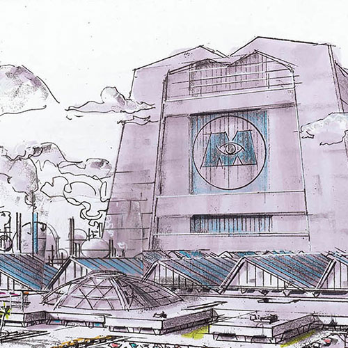
- 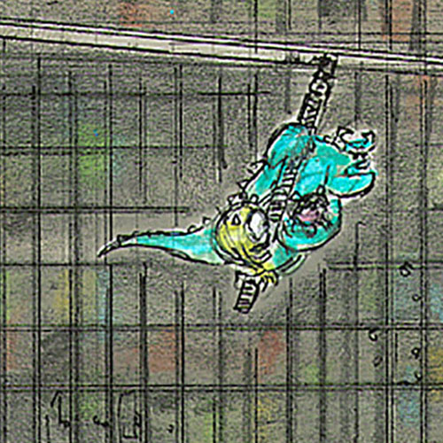
- 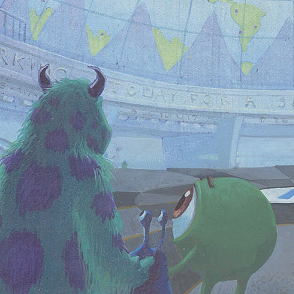
- 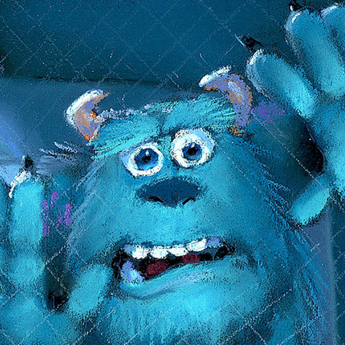
Monsters, Inc.
There's a reason why there are monsters in children's closets—it's their job.
Monsters, Inc. is the most successful scream-processing factory in the monster world, and there is no better Scarer than James P. Sullivan.
But when "Sulley" accidentally lets a little human girl into Monstropolis, life turns upside down for him and his buddy Mike.
- 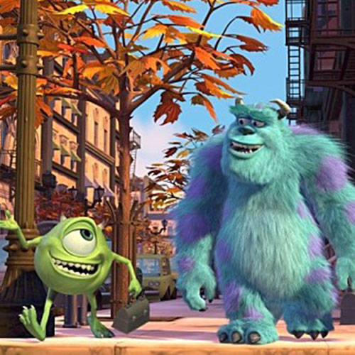
- 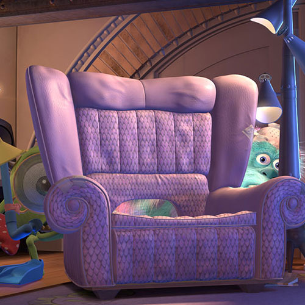
- 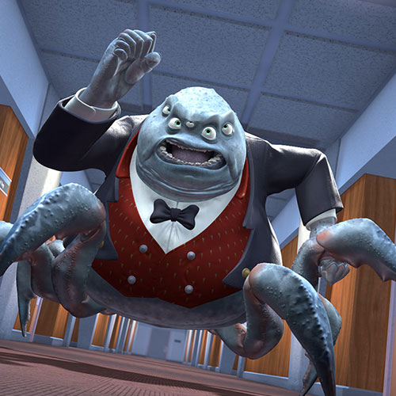
- 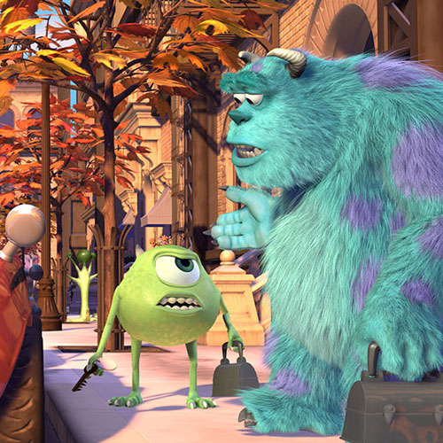
Monsters, Inc. 3D
When the dark night comes, they appear beyond the children's closet!
The best monster duo back in 3D!
The main job of monsters is to collect energy! The most important source of energy is the screams of human children!
Will Sully and Mike, who are on the verge of being kicked out of the company a day in the morning, be able to safely send "bu" back to the human world?
- 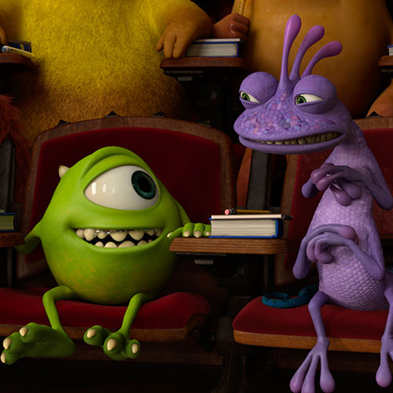
- 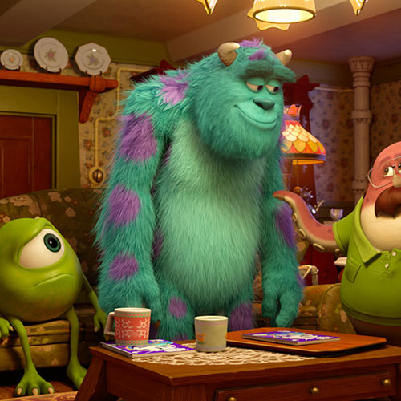
- 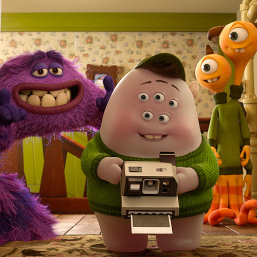
- 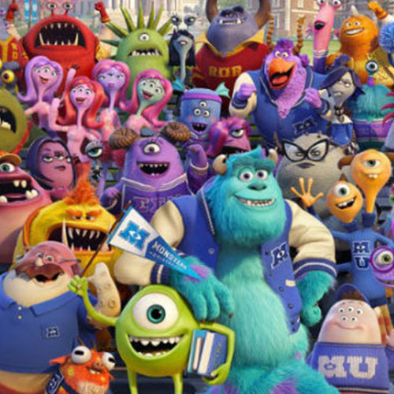
Monster University
The prequel of Monster Inc. tells the story of Mike and Sully's past college days and is also called MU or Mondae in Korea for shorting Monster University.
There are stories in the movie about different jobs and talents that one likes, or stories that one has talent but can't find it and can't produce proper results. And James P.
Sullivan overcomes fear, and Mike Wazowski shines in search of his right talent and his partner.